내 Windows PC에서
클라우드의 Hermes를 조종하기
Hermes Desktop을 Windows에 설치하고, 텐센트클라우드 Lighthouse에서 24시간 도는 Hermes Agent에 SSH 하나로 연결해요.
포트를 열 필요도, 세션 키를 복사할 필요도 없어요. 혼자 쓰고 간단히 관리하는 데 맞춘 구성이에요.
어디서 시작할까요?
무엇이 PC에 깔리고 무엇이 서버에 있는지, 왜 SSH 방식이 편한지 먼저 봐요.
바로 실습 · 30~40분1단계부터 따라 하기설치 → 키 만들기 → 서버에 키 등록 → Desktop에서 연결까지 한 번에.
막혔어요에러 메시지로 찾기Desktop에 뜬 영어 메시지를 그대로 찾아서 고치는 방법을 봐요.
이 구성이 맞는 사람
나 혼자 쓰는 Hermes 서버가 1대 있다 (텐센트 Lighthouse의 Hermes Agent 템플릿).
텔레그램뿐 아니라 PC 화면에서도 서버의 Hermes와 대화하고, 세션·스킬·크론잡·파일을 보고 싶다.
대시보드 포트(9119)를 인터넷에 열거나, 로그인 서버·VPN을 따로 세우는 건 번거롭다.
💬 한 줄 요약: Windows에 앱을 깔고, PC의 SSH 열쇠를 서버에 맡긴 뒤, 앱에서 agentuser@서버IP:22만 적으면 끝이에요.
화면 캡처에 대해
📸 Hermes 앱 화면은 Windows 앱과 같은 화면 코드로 만든 Hermes Webapp(v0.23.4)에서 직접 찍었어요. 그래서 창 테두리가 없고, Gateways 페이지 맨 위 안내 문구가 데스크톱 앱과 조금 달라요. 버튼·입력칸·순서는 같아요.
🧪 연결 성공 화면은 Lighthouse Hermes 템플릿처럼 꾸민 Ubuntu 24.04 테스트 서버(사용자 agentuser)에 실제로 SSH로 연결해서 찍었어요. 그래서 주소가 127.0.0.1:2222로 보여요. 여러분 화면에는 서버 공인 IP:22가 보여요.
🌐 다운로드 페이지·Microsoft Store·텐센트 안내 페이지는 실제 웹페이지를 캡처했어요. Windows 전용 화면(PowerShell 등)은 그대로 따라 칠 수 있게 명령과 예상 결과로 적었어요.
⚠️ 이 가이드는 비공식 학습 자료예요. Nous Research, Tencent Cloud와는 관계가 없어요. 메뉴 이름은 업데이트로 바뀔 수 있으니, 다르면 각 단계 끝의 공식 문서 링크를 기준으로 확인하세요.
💡 이렇게 쓰세요: 왼쪽 목차에서 단계를 고르고, 따라 한 뒤 이 단계 완료를 누르세요. 진행 상황은 이 브라우저에만 저장돼요. 키보드 ← →로 이전·다음 단계로 넘어가요.
큰 그림: 무엇을 어디에 두나
Hermes의 “두뇌”는 서버에, “화면”은 내 PC에 둬요.
🖥️ 내 Windows PC
- Hermes Desktop (앱 = 화면)
- SSH 열쇠: 개인키
id_ed25519 - PC를 꺼도 서버 일은 계속돼요
(포트 22 하나)
☁️ 텐센트 Lighthouse VPS
- Hermes Agent (두뇌, 24시간)
- 사용자
agentuser아래 설치 - 세션·메모리·스킬·크론잡·텔레그램 봇
- SSH 열쇠: 공개키 등록(
authorized_keys)
앱이 알아서 해 주는 일
Desktop의 SSH 연결을 쓰면 앱이 아래 일을 혼자 처리해요. 우리가 할 일은 “열쇠 등록”과 “주소 입력”뿐이에요.
내 SSH 열쇠로 서버에 접속해요.
서버에 깔린 hermes 실행 파일을 찾아요. (command -v hermes → ~/.local/bin/hermes 순서로 찾아요)
서버 안에서만 열리는 hermes serve를 켜고(127.0.0.1, 임의 포트), 그걸 SSH 터널로 내 PC까지 끌어와요.
터널 안에서 접속 토큰을 받아와 Desktop 화면에 서버의 프로필·세션을 띄워요.
다른 방식과 비교
| 방식 | 열어야 하는 포트 | 필요한 것 | 혼자 쓰기 난이도 |
|---|---|---|---|
| SSH (이 가이드) | 22 (보통 이미 열려 있음) | SSH 키 1개 | ⭐ 쉬움 |
| Remote gateway (URL) | 9119 등 대시보드 포트 | 세션 토큰 또는 OAuth, 인터넷 공개 시 OAuth 필수 | ⭐⭐⭐ 번거로움 |
| Lighthouse 웹 패널·OrcaTerm만 사용 | 없음 | 브라우저 | 쉬움, 대신 Desktop 기능(세션·파일·Git 화면) 없음 |
⚠️ 공식 문서는 비밀번호(사용자명/비밀번호) 방식 백엔드를 인터넷에 그대로 열지 말라고 해요. SSH 방식은 대시보드 포트를 열지 않으니 이 걱정이 없어요.
📌 SSH로 띄운 서버 쪽 hermes serve는 아무도 접속하지 않고 할 일도 없으면 15분 뒤 스스로 꺼져요(dashboard.ssh_isolated_idle_grace_s). 텔레그램 봇을 돌리는 gateway는 별개 프로세스라 Desktop을 닫아도 계속 돌아요.
출처: Hermes Desktop · Connecting to a remote backend, Connecting Desktop to Many Hermes Instances
준비물 체크리스트
아래 네 가지만 있으면 30~40분이면 끝나요.
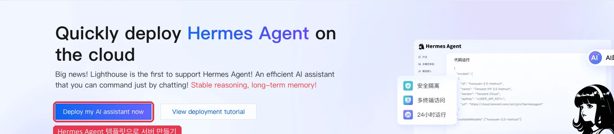
⚠️ 기존 서버를 시스템 재설치로 Hermes 템플릿으로 바꾸면 서버 안의 데이터가 모두 지워져요. 재설치 화면에서 “재설치 전 백업”을 고르세요.
미리 정해 둘 이름 두 개
| 무엇 | 이 가이드의 예시 | 설명 |
|---|---|---|
| 서버 공인 IP | 203.0.113.10 | 설명용 예시 주소예요. 3단계에서 내 서버 IP로 바꿔 쓰세요. |
| Hermes가 설치된 리눅스 사용자 | agentuser | 텐센트 공식 안내 기준(2026-04-15 이후 생성된 Hermes 인스턴스). 그 전에 만든 인스턴스는 lighthouse예요. 4단계에서 확인해요. |
| Desktop에 붙일 연결 이름 | Lighthouse | 앱 안에서 보이는 이름. 아무거나 괜찮아요. |
1단계. Hermes Desktop 설치
원격 서버만 쓸 거여도 일반 Desktop 앱을 그대로 깔아요. “원격 전용” 다운로드는 따로 없어요.
브라우저에서 hermes-agent.nousresearch.com/desktop을 열고 아래로 내려 Windows 카드를 찾아요.
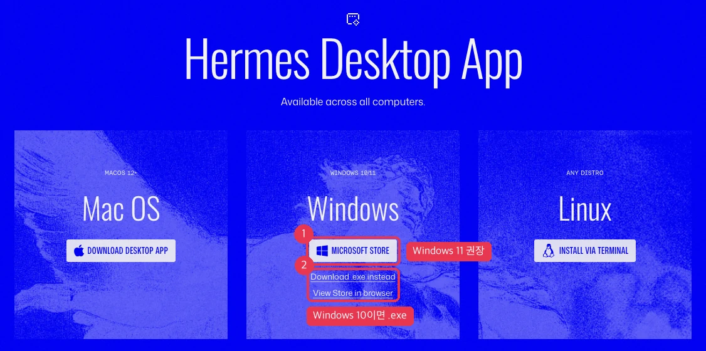
Microsoft Store(권장): Store 페이지에서 받기/설치를 눌러요. 게시자가 Nous Research Inc.인지 확인하세요. Store 판은 Python·Node 등이 다 들어 있어 첫 실행 때 따로 빌드하지 않고, 업데이트도 Store가 해 줘요.
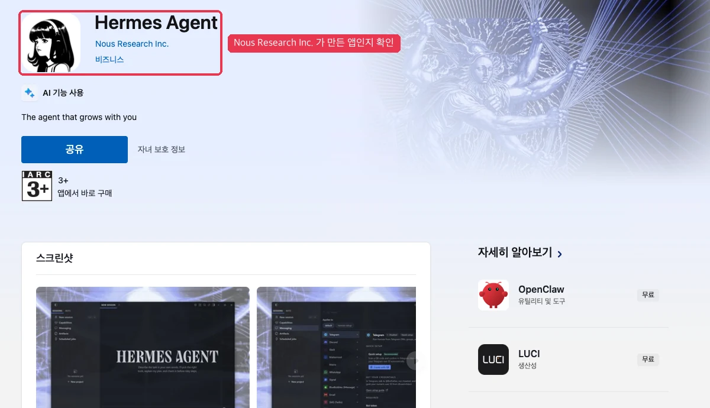
.exe를 받은 경우: Hermes-Setup.exe를 실행해요. 이건 “부트스트랩 설치기”라서 소스를 받아 앱을 만들어요. 인터넷 상태에 따라 몇 분 걸려요. Store 판과 다르니 헷갈리지 마세요.
📌 공식 문서 기준: MSIX/Store 판 = 완성된 앱 묶음(Windows 11 22H2+), Hermes-Setup.exe = 소스로 설치하는 부트스트랩. 둘 다 마지막 결과는 같은 Hermes Desktop이에요.
앱을 처음 켜면 모델 공급자(Provider)를 고르라는 창이 떠요. 우리는 서버의 Hermes를 쓸 거라 지금은 I'll choose a provider later를 눌러 건너뛰어요.
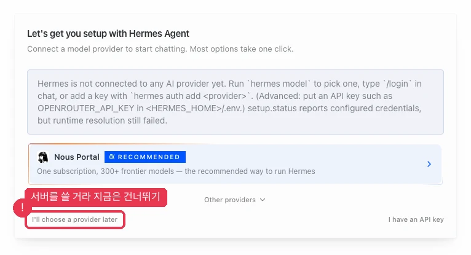
메인 화면이 뜨면 설치 끝이에요. 오른쪽 위 톱니바퀴(설정)와 왼쪽 아래 플러그 아이콘을 기억해 두세요. 8단계에서 둘 중 하나로 연결 설정에 들어가요.
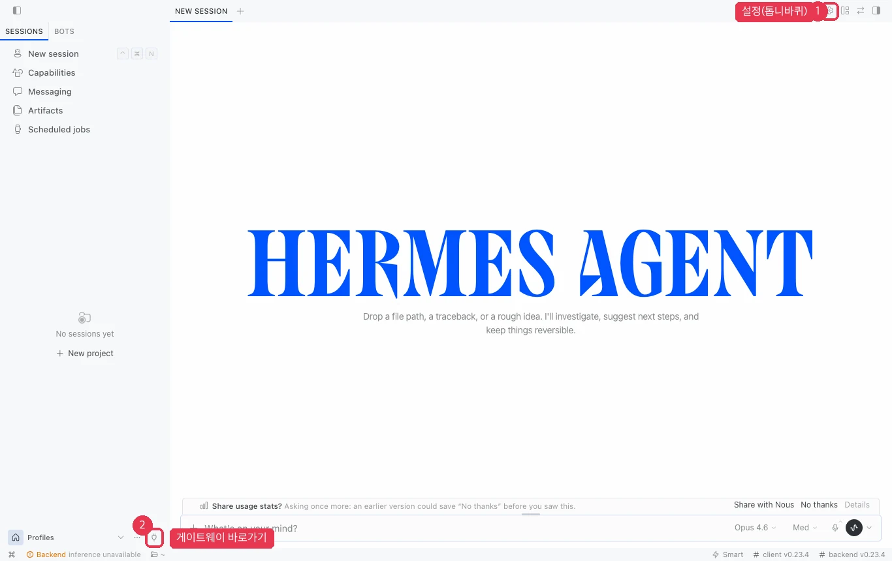
✅ 확인: 시작 메뉴에서 Hermes를 다시 켤 수 있으면 성공이에요.
공식 문서: Installation · Windows (Native)
2단계. SSH 키 만들기 (PowerShell)
SSH 키는 열쇠(개인키)와 자물쇠(공개키) 한 쌍이에요. 자물쇠만 서버에 달고, 열쇠는 PC에만 둬요.
시작 메뉴에서 PowerShell(또는 Windows 터미널)을 열고, SSH 프로그램이 있는지 확인해요.
ssh -Vssh를 찾을 수 없다고 나오면 설정 → 시스템 → 선택적 기능 → 기능 보기/추가에서 OpenSSH 클라이언트를 설치하거나, 관리자 PowerShell에서 아래를 실행해요.
Add-WindowsCapability -Online -Name OpenSSH.Client~~~~0.0.1.0📌 Hermes Desktop은 Windows에 기본으로 들어 있는 C:\Windows\System32\OpenSSH\ssh.exe를 먼저 쓰고, 없으면 Git for Windows의 ssh를 써요.
키를 만들어요. 질문이 나오면 Enter로 기본 위치에 저장해요.
ssh-keygen -t ed25519 -C "hermes-desktop"| 암호(passphrase) | 장점 | 해야 할 일 |
|---|---|---|
| 비워 둠 (간단 코스) | 설정이 제일 쉬워요 | PC 로그인 암호를 꼭 걸어 두세요. 키 파일이 유출되면 바로 서버에 들어갈 수 있어요. |
| 설정함 (안전 코스) | 키 파일이 새도 암호 없이는 못 써요 | Desktop은 SSH를 비대화식(BatchMode)으로 돌려서 암호를 물어보지 못해요. 그래서 아래 3번처럼 ssh-agent에 키를 올려 둬야 해요. |
(안전 코스만) 관리자 PowerShell에서 ssh-agent를 켜고, 일반 PowerShell에서 키를 올려요. 한 번 해 두면 재부팅 후에도 자동으로 켜져요.
Get-Service ssh-agent | Set-Service -StartupType Automatic
Start-Service ssh-agentssh-add $env:USERPROFILE\.ssh\id_ed25519공개키(자물쇠)를 클립보드에 복사해요. 5단계에서 서버에 붙여 넣어요.
Get-Content $env:USERPROFILE\.ssh\id_ed25519.pub | Set-Clipboard
Get-Content $env:USERPROFILE\.ssh\id_ed25519.pub⚠️ .pub가 붙은 파일만 서버에 올려요. .pub가 없는 id_ed25519는 개인키라 누구에게도 보내면 안 돼요. 카톡·메일·채팅창에 붙여 넣지 마세요.
3단계. 서버 정보 확인
콘솔에서 서버 공인 IP를 적어 두고, 웹 터미널(OrcaTerm)로 들어가 봐요.
Lighthouse 콘솔 → 인스턴스(Instances)를 열어요. Hermes 서버 카드에서 공인 IP(Public IP)를 확인해 메모장에 적어 두세요.
📌 카드에 지역(예: 서울, 싱가포르)도 보여요. 지역이 여러 개면 왼쪽 위 지역 선택에서 서버가 있는 지역을 골라야 카드가 보여요.
카드의 로그인(Login)을 누르면 브라우저 터미널 OrcaTerm이 열려요. 창에서 이렇게 고르고 로그인해요.
| 항목 | 선택 |
|---|---|
| 로그인 방식 | 비밀번호 없는 로그인 (Password-free login) |
| 사용자 이름 | agentuser (2026-04-15 이전에 만든 Hermes 인스턴스는 lighthouse) |
📌 텐센트 공식 Hermes 튜토리얼 기준이에요. “Hermes Agent는 agentuser 사용자 아래 설치돼 있다”고 안내해요. 이 사용자 이름이 7·8단계의 SSH 주소 앞부분이 돼요.
✅ 확인: 검은 터미널 화면에 agentuser@…:~$ 같은 줄이 보이면 성공이에요. 창을 닫지 말고 4단계로 가요.
공식 문서: Getting Started with Hermes Agent on Lighthouse · OrcaTerm으로 Linux 인스턴스 접속
4단계. 서버의 Hermes 확인·최신화
“누구로 로그인했는지”, “hermes가 어디 있는지”, “버전이 충분히 새것인지” 세 가지만 봐요.
OrcaTerm에 아래를 붙여 넣고 Enter.
whoami
command -v hermes
hermes --version/home/agentuser/.local/bin/hermes처럼 ~/.local/bin 아래 있으면 Desktop이 자동으로 찾아요.
결과를 보고 판단해요.
| 보이는 것 | 뜻 | 할 일 |
|---|---|---|
whoami → agentuser | Hermes 주인 계정으로 들어옴 | 그대로 진행 |
command -v hermes → 아무것도 안 나옴 | 다른 사용자로 들어왔거나, 설치 위치가 PATH에 없음 | sudo su - agentuser 또는 sudo su - lighthouse로 바꿔 다시 확인. 그래도 없으면 ls ~/.local/bin/로 찾기 |
hermes --version → 오래된 버전 | Desktop의 SSH 연결 기능보다 옛날 버전일 수 있음 | 아래 3번 hermes update |
서버의 Hermes를 최신으로 올려요. Desktop의 SSH 연결은 서버 쪽에 새 기능(serve --ssh-session-token-file)이 있어야 돼요. 템플릿으로 만든 지 오래된 서버라면 꼭 해 주세요.
hermes update
hermes --version⚠️ 업데이트하면 잠깐 텔레그램 봇(gateway)이 재시작될 수 있어요. 중요한 작업이 도는 중이면 끝난 뒤에 하세요. 불안하면 먼저 Lighthouse 스냅샷을 하나 떠 두세요(콘솔 → 인스턴스 → 스냅샷).
5단계. 공개키 등록 (자물쇠 달기)
2단계에서 복사한 공개키를 Hermes 주인 계정(agentuser)의 authorized_keys에 넣어요.
방법 A. OrcaTerm에서 붙여 넣기 (추천)
Hermes가 agentuser 아래 있으니, 키도 agentuser에게 달아 주는 게 제일 깔끔해요.
아래 명령에서 여기에_공개키_한줄 부분을 지우고, 복사해 둔 ssh-ed25519 AAAA… hermes-desktop 한 줄을 붙여 넣은 뒤 실행해요. 작은따옴표는 남겨 두세요.
mkdir -p ~/.ssh && chmod 700 ~/.ssh
echo '여기에_공개키_한줄' >> ~/.ssh/authorized_keys
chmod 600 ~/.ssh/authorized_keys
tail -n 1 ~/.ssh/authorized_keys마지막 줄에 방금 붙인 ssh-ed25519 … hermes-desktop이 보이면 성공이에요.
⚠️ >>(두 개)는 “뒤에 추가”, >(한 개)는 “덮어쓰기”예요. 반드시 두 개를 쓰세요. 한 개를 쓰면 원래 있던 키가 지워져요.
방법 B. 콘솔의 SSH 키 기능 (참고)
콘솔 왼쪽 메뉴 SSH 키(SSH Key Pair) → 생성(Create) → 기존 공개키 사용에 공개키를 붙여 넣고, 인스턴스 바인딩(Bind Instance) → 온라인 바인딩으로 붙이는 방법도 있어요. 다만 공식 문서 기준으로 이렇게 붙인 키는 Ubuntu면 ubuntu 사용자, 그 밖에는 root에게 들어가요.
⚠️ 방법 B로 ubuntu나 root에 키를 붙이면, Desktop이 그 사용자로 접속해서 agentuser의 Hermes(세션·메모리·스킬)를 못 찾을 수 있어요. 또 키를 바인딩하면 root 비밀번호 로그인이 기본으로 꺼져요. Lighthouse Hermes 템플릿이라면 방법 A를 쓰세요.
6단계. 방화벽 점검
필요한 건 TCP 22 하나예요. 9119 같은 대시보드 포트는 열지 않아요.
콘솔 → 인스턴스 카드 클릭 → 방화벽(Firewall) 탭에서 TCP 22 허용 규칙이 있는지 봐요. Linux Lighthouse는 보통 SSH(22)가 기본 규칙에 들어 있어요. 없으면 규칙 추가 → 애플리케이션 유형 Linux 로그인(22)으로 추가해요.
(선택, 더 안전하게) 22번 규칙의 소스(Source)를 0.0.0.0/0(전체) 대신 내 집·사무실 IP(내IP/32)로 좁힐 수 있어요.
⚠️ 집 인터넷 IP가 바뀌면 SSH가 막혀요. 그럴 땐 당황하지 말고 콘솔의 OrcaTerm으로 들어가세요. 자동화 도우미(TAT)를 쓰는 비밀번호 없는 로그인은 방화벽에서 22번을 열지 않아도 된다고 공식 문서에 나와 있어요. 들어간 뒤 규칙의 IP만 고치면 돼요.
✅ 지켜야 할 한 가지: 9119·9120·8642 같은 Hermes 포트를 방화벽에 열지 마세요. SSH 방식은 터널로 연결해서 열 필요가 없어요.
7단계. PowerShell로 SSH 접속 테스트
Desktop은 PC의 SSH를 그대로 써요. 그래서 PowerShell에서 먼저 성공해야 앱에서도 성공해요.
PowerShell에서 (IP는 내 서버로 바꿔서):
ssh agentuser@203.0.113.10처음 한 번은 “이 서버를 믿을 거냐”고 물어요. yes를 치고 Enter. (서버 지문을 저장해 두는 과정이에요.)
비밀번호를 묻지 않고 바로 프롬프트가 뜨면 성공이에요. 확인 삼아 한 줄 쳐 보고 나와요.
hermes --version
exit(선택) 짧은 이름 만들기
매번 IP를 치기 귀찮으면 C:\Users\나\.ssh\config 파일(확장자 없음)을 메모장으로 만들어 아래처럼 적어요. 그러면 ssh hermes-lh만 쳐도 돼요.
Host hermes-lh
HostName 203.0.113.10
User agentuser
Port 22
IdentityFile ~/.ssh/id_ed25519📌 Desktop의 “SSH host” 칸에는 이 별명보다 agentuser@203.0.113.10:22처럼 전체 주소를 적는 걸 추천해요. 다른 이름의 키 파일을 쓴다면 위 config의 IdentityFile이 앱에도 적용돼요.
⚠️ 여기서 Permission denied (publickey)가 나오면 5단계(공개키 등록)를, 한참 멈춰 있다가 시간 초과가 나면 6단계(방화벽)와 IP를 다시 보세요. 문제 해결에 자세히 있어요.
8단계. Desktop에 SSH 게이트웨이 추가
Settings → Gateways → Add connection → SSH. 이 순서만 기억하면 돼요.
Hermes Desktop에서 오른쪽 위 톱니바퀴(또는 Ctrl+,)로 설정을 열고, 왼쪽 메뉴에서 Gateways를 눌러요. 아래쪽 연결 목록에서 Add connection을 눌러요.
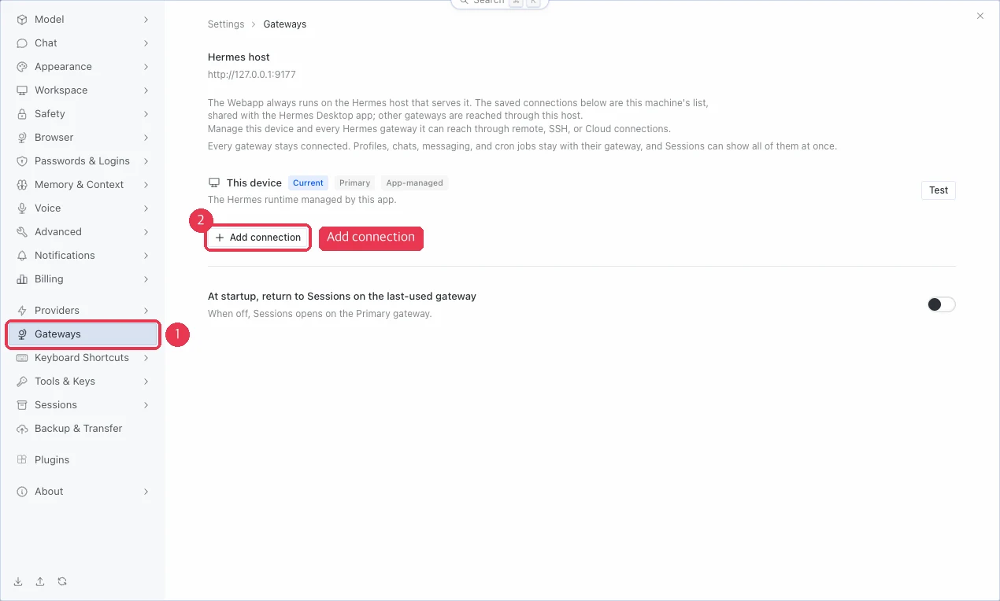
📌 지름길: 왼쪽 아래 프로필 줄 끝의 플러그 아이콘(Connect another Hermes gateway…)이나, Ctrl+K → Gateways로도 같은 화면에 와요.
연결 종류 버튼 네 개가 나와요. 처음엔 Remote gateway가 선택돼 있어요. SSH를 눌러 바꿔요.
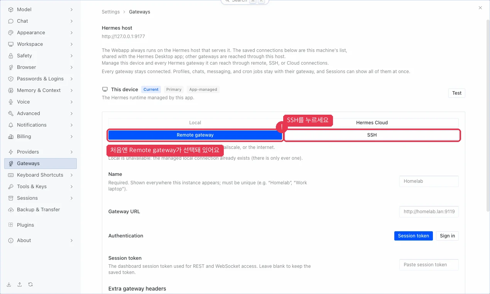
⚠️ 세션 토큰(Session token)을 붙여 넣으라는 칸이 보이면 잘못 고른 거예요. SSH 방식은 토큰이 필요 없어요.
SSH를 누르면 칸이 세 개로 줄어요.
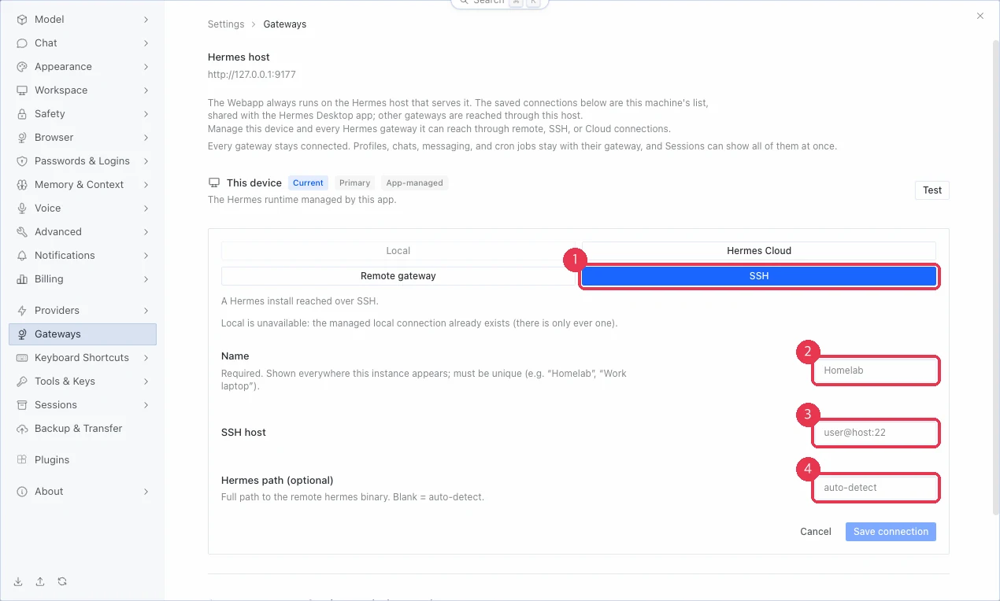
| 칸 | 무엇을 적나 | 예시 |
|---|---|---|
| ② Name | 앱에서 보일 이름. 겹치면 안 돼요(최대 64자). | Lighthouse |
| ③ SSH host | 사용자@서버IP:포트. 사용자는 4단계의 whoami 결과. | agentuser@203.0.113.10:22 |
| ④ Hermes path | 비워 두기(자동 찾기). 테스트에서 “Hermes is not installed…”가 나올 때만 4단계의 command -v hermes 경로를 적어요. | (빈칸) 또는 /home/agentuser/.local/bin/hermes |
값을 넣고 Save connection을 눌러요.
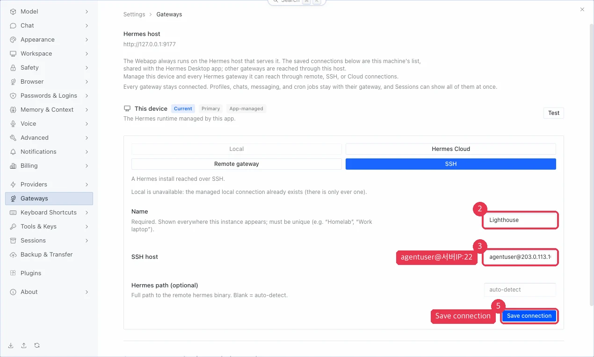
203.0.113.10은 설명용 예시 주소예요. 실제 화면 · 예시 값 입력⚠️ SSH host 칸에 ssh agentuser@…처럼 ssh를 앞에 붙이거나 띄어쓰기를 넣으면 “Invalid SSH host: contains whitespace” 에러가 나요. 주소만 적어요. IP에 쉼표(,)를 쓰면 안 돼요.
9단계. Test → 서버 에이전트와 대화
목록에 생긴 연결의 Test를 누르고 Reachable이 뜨면 끝이에요.
Gateways 목록에 방금 만든 연결이 생겨요. 오른쪽 Test를 눌러요. 처음엔 서버에서 hermes serve를 켜느라 수십 초 걸릴 수 있어요.
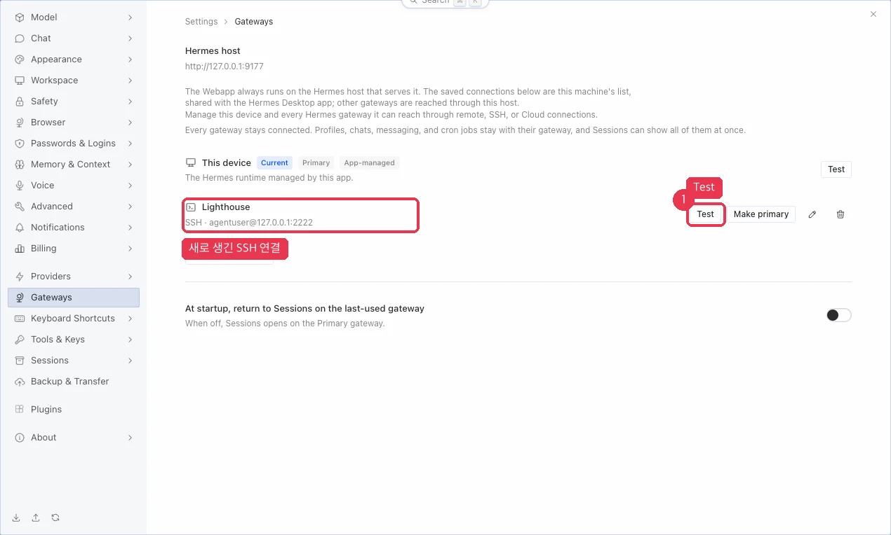
SSH · 사용자@주소로 표시돼요. 실제 화면 · 테스트 서버화면 오른쪽 아래에 Reachable 알림이 뜨면 성공이에요. Test는 HTTP와 WebSocket을 둘 다 확인해서, 성공이면 채팅도 된다는 뜻이에요.
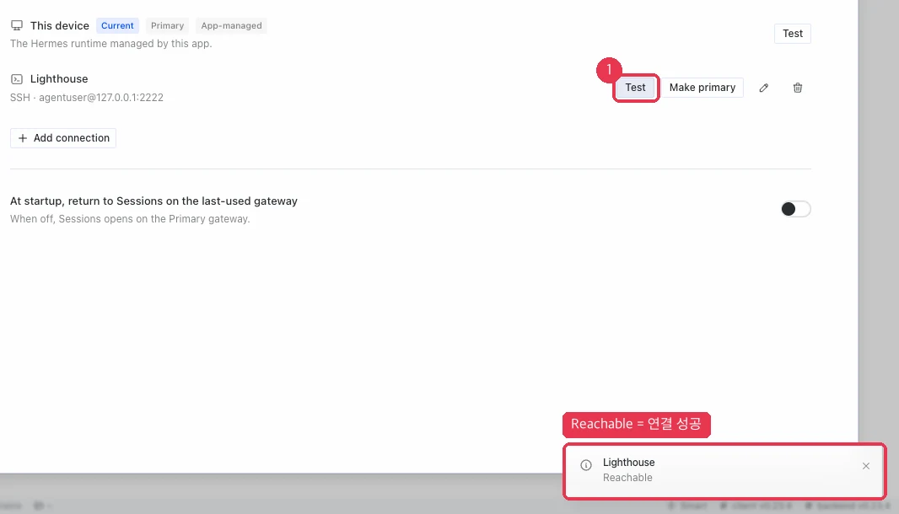
설정 창을 닫고 Sessions로 돌아가요. 맨 아래 상태 표시줄 왼쪽의 게이트웨이 선택기(처음엔 This device)를 눌러 Lighthouse(내가 붙인 이름)를 고르면, 서버의 프로필과 세션이 보여요.
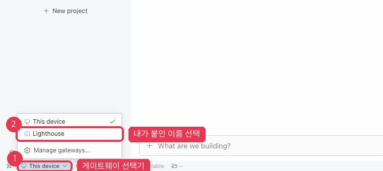
새 세션에서 이렇게 물어보세요. 서버의 이름과 사용자가 나오면 진짜 서버에서 일하고 있다는 뜻이에요.
터미널에서 hostname 과 whoami 를 실행해서 결과만 알려줘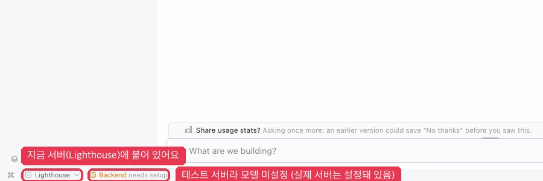
Backend needs setup이 보이지만, 모델이 설정된 실제 Lighthouse라면 바로 대화할 수 있어요. 실제 화면 · 테스트 서버📌 오른쪽 터미널 레일의 + 옆 화살표(또는 + 우클릭)로 This device나 SSH 게이트웨이 쪽 터미널을 골라 열 수 있어요. 서버 쪽 터미널에서는 OrcaTerm 없이도 hermes gateway status 같은 명령을 바로 칠 수 있어요.
(선택) 서버를 기본으로
앱을 켤 때마다 서버부터 보고 싶다면 Gateways 목록에서 서버 연결의 Make primary를 누르거나, At startup, return to Sessions on the last-used gateway를 켜요.
주간 5분 관리 루틴
혼자 쓰면 “관리자”도 나예요. 일주일에 한 번, 아래 다섯 개만 체크하세요.
hermes --version
hermes gateway status
df -h /
uptime알아 두면 마음 편한 것
PC를 꺼도 서버 일은 계속돼요. 크론잡·텔레그램 봇은 서버의 gateway가 돌려요. Desktop은 창일 뿐이에요.
끊겨도 다시 붙어요. 등록한 게이트웨이는 앱이 켜져 있는 동안 계속 연결을 유지하고, 끊기면 30초마다 다시 접속을 시도해요.
노트북을 새로 사면: 새 PC에서 2단계(키 만들기)부터 다시 하고, 서버 authorized_keys에 새 공개키를 한 줄 더 추가하면 돼요. 서버의 대화·메모리는 그대로예요.
Windows는 조금 더 느릴 수 있어요. Windows용 OpenSSH는 연결 재사용(ControlMaster)을 지원하지 않아서, 앱이 작업마다 SSH를 새로 열어요. 정상이에요.
문제 해결 (에러 메시지별)
Desktop 알림에 뜬 영어 문장의 앞부분으로 찾으세요. Ctrl+F도 좋아요.
| 메시지(앞부분) | 원인 | 해결 |
|---|---|---|
SSH authentication to … failed. Desktop runs ssh non-interactively (BatchMode)… | 공개키가 서버에 없거나, 암호 걸린 키가 ssh-agent에 안 올라가 있음 | 7단계 PowerShell ssh가 비밀번호 없이 되는지 확인 → 안 되면 5단계 다시. 암호 키면 2단계 3번 ssh-add |
Hermes is not installed on the remote host (could not find a `hermes` executable)… | Hermes 주인이 아닌 사용자로 접속했거나, 경로를 못 찾음 | SSH host의 사용자를 agentuser(또는 lighthouse)로. 그래도 안 되면 Hermes path에 command -v hermes 결과 입력 |
The Hermes path you set is not an executable on the remote host… | Hermes path 칸의 경로가 틀림 | 칸을 비워 자동 찾기로 되돌리거나, 서버에서 ls -l 경로로 확인한 정확한 경로 입력 |
The remote Hermes install does not support --ssh-session-token-file and --ssh-owner-nonce. Update Hermes on the remote host. | 서버의 Hermes가 너무 오래됨 | 서버에서 hermes update (4단계 3번) 후 다시 Test |
ssh timed out after 15000ms | 방화벽 22번 막힘, IP 틀림, 느린 네트워크·VPN | 6단계 방화벽·IP 확인. 네트워크가 느리면 PC의 %LOCALAPPDATA%\hermes\config.yaml에 아래 설정 추가 후 앱 재시작 |
The host key for … has CHANGED since you last connected… | 서버를 재설치했거나 지문이 바뀜 (드물게 공격일 수도) | 재설치한 게 맞다면 PowerShell에서 ssh-keygen -R 서버IP → 7단계로 다시 yes |
Invalid SSH host: contains whitespace… | SSH host 칸에 ssh 나 공백을 넣음 | agentuser@IP:22만 적기 |
| 세션 토큰(Session token)을 붙여 넣으라고 함 | 연결 종류를 Remote gateway로 둠 | 연결을 지우고 다시 Add connection → SSH |
앱이 SSH 클라이언트 에러로 시작을 멈춤 (예: 모든 ssh.exe가 code 255로 끝남) | Windows 업데이트 등으로 기본 OpenSSH가 고장 | Git for Windows를 설치하고 config.yaml에 ssh_path 지정 (아래) |
Connection test failed (HTTP는 되는데 채팅이 안 됨) | WebSocket(/api/ws)이 막힘 | SSH 방식에선 드물어요. 서버에서 hermes update, 앱 업데이트 후 재시도 |
config.yaml에 넣는 Desktop 설정
Windows에서 Hermes 데이터 폴더의 기본 위치는 %LOCALAPPDATA%\hermes예요. 그 안의 config.yaml을 메모장으로 열어 desktop: 아래에 두 칸 들여쓰기로 넣고, 앱을 재시작해요.
desktop:
ssh_connect_timeout: 60
ssh_forward_timeout: 60
# 기본 OpenSSH가 고장 났을 때만:
# ssh_path: 'C:\Program Files\Git\usr\bin\ssh.exe'📌 timeout 값은 1~120 사이 정수(초)예요. 60s, 1.5, 0 같은 값은 무시돼요.
그래도 안 되면 이 순서로
PowerShell에서 ssh agentuser@서버IP "hermes --version"이 비밀번호 없이 버전을 출력하나요? 안 되면 문제는 앱이 아니라 SSH예요(5·6·7단계).
된다면 서버에서 hermes update, PC 앱도 최신으로 올린 뒤 다시 Test.
연결을 지우고(휴지통 아이콘) 다시 추가. 서버의 데이터는 지워지지 않아요.
출처: Hermes Desktop · Troubleshooting, Hermes Agent v0.23.4 소스의 에러 문구
연결 정리·키 교체·삭제
연결만 지우기
Settings → Gateways에서 연결 오른쪽 휴지통을 누르면 확인 창이 떠요. “서버 자체는 건드리지 않는다”는 안내처럼, 서버의 Hermes와 데이터는 그대로예요. 언제든 다시 추가할 수 있어요.
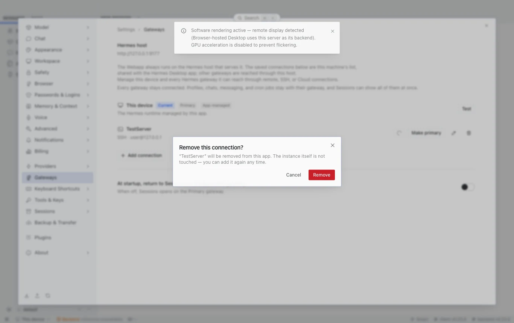
PC를 잃어버렸거나 키를 바꾸고 싶을 때
콘솔 OrcaTerm으로 서버에 들어가 authorized_keys를 열어요.
nano ~/.ssh/authorized_keys끝에 hermes-desktop이 붙은 줄(잃어버린 PC의 키)을 지우고 Ctrl+O, Enter, Ctrl+X로 저장·종료해요.
새 PC에서 2단계(키 만들기)와 5단계(등록)를 다시 해요.
앱 지우기
Store·MSIX 판은 Windows 설정 → 앱 → 설치된 앱에서 지워요. 앱을 지워도 서버의 Hermes는 그대로예요.
⚠️ PC의 %LOCALAPPDATA%\hermes 폴더를 통째로 지우는 건 피하세요. 연결 목록과 토큰 파일(gateway-connections.json)도 거기 있어요.
명령어 한 장 요약 · 참고 자료
Windows PowerShell
ssh -V # SSH 있는지
ssh-keygen -t ed25519 -C "hermes-desktop" # 키 만들기
Get-Content $env:USERPROFILE\.ssh\id_ed25519.pub | Set-Clipboard # 공개키 복사
ssh agentuser@서버IP # 접속 테스트
ssh agentuser@서버IP "hermes --version" # 원격 한 줄 실행
ssh-keygen -R 서버IP # 서버 재설치 후 지문 지우기서버 (OrcaTerm / SSH, agentuser)
whoami && command -v hermes && hermes --version # 주인·경로·버전
hermes update # 최신화
mkdir -p ~/.ssh && chmod 700 ~/.ssh
echo '공개키_한줄' >> ~/.ssh/authorized_keys && chmod 600 ~/.ssh/authorized_keys
hermes gateway status # 메시징 봇 상태
df -h / # 디스크Desktop
| 하고 싶은 것 | 위치 |
|---|---|
| 서버 연결 추가 | Settings(Ctrl+,) → Gateways → Add connection → SSH |
| 연결 확인 | Gateways 목록 → Test → Reachable |
| 서버로 전환 | Sessions 왼쪽 아래 게이트웨이 선택기 |
| 앱을 켤 때 서버부터 | Make primary 또는 “At startup, return to Sessions on the last-used gateway” |
| 한 번에 업데이트 | Update now (서버 → 다른 게이트웨이 → 앱 순서) |
참고 자료
- Hermes Desktop 다운로드
- Hermes Desktop 공식 문서 · 여러 Hermes 연결하기 · Windows (Native)
- Tencent: Getting Started with Hermes Agent on Lighthouse · Quickly Deploy Hermes Agent Using Lighthouse
- Lighthouse: Managing Instance Keys (Linux) · Managing Instance Firewall · OrcaTerm 접속
- GitHub 이슈 #37663: Desktop을 기존 VPS Hermes에 연결 (SSH 연결 기능 추가 안내)
203.0.113.10은 설명용 예시(문서용 IP 대역)예요.